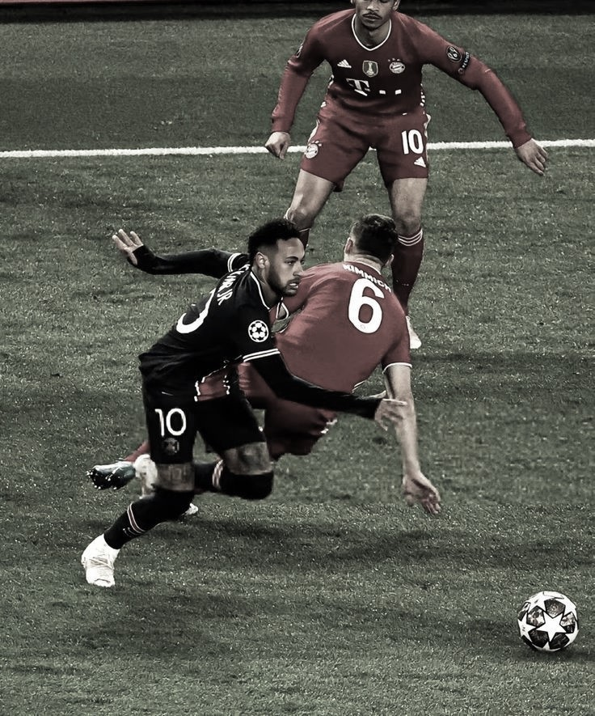
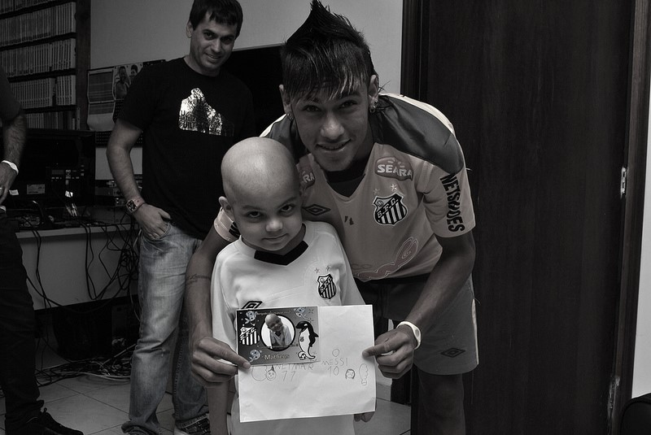

Neymar também é conhecido por sua forte presença fora dos campos, incluindo trabalhos sociais, publicidade e grande influência nas redes sociais.
Seu estilo é marcado por dribles rápidos, criatividade e finalizações precisas, sendo considerado um dos jogadores mais habilidosos de sua geração.

Neymar ajudou a popularizar ainda mais o futebol brasileiro no cenário mundial, sendo referência para jovens atletas.
